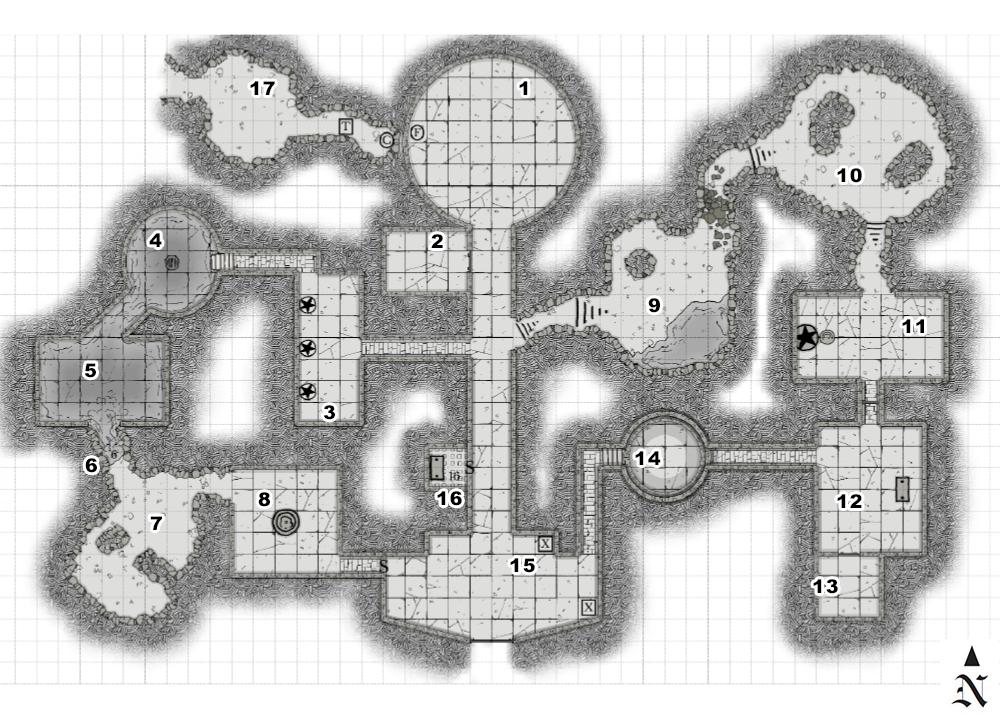

Danger Level. Risky. (2rds)
Light. Total darkness unless noted.
Each RNG roll after first, apply cumulative -1. Reset each Raka Ooku encounter.
Random Encounters
| d6 | details |
|---|---|
| 1 | Raka Ooku, the necromantic gelatinous cube. Attacks immediately. |
| 2 | Jellied Skeletons 1+1 for each PC that has been killed. Attack immediately. |
| 3 | The Collector Roll reaction. Quickly tries to gather any objects lying around. |
| 4 | Slime puddle If the players touch the puddle, roll on the puddle effects table. |
| 5 | A group of 1d4 rats scurries past. Catch one with a DC 15 DEX. |
| 6 | An NPC villager stumbles out of the darkness. Roll reaction. |

OTHER INFO
Aftermath.
If the PCs escape through the drain in Area 4 or cave in Area 17 they are not pursued and are free to head out into the wilderness or attempt to return to Frostholm. Most importantly, they gain their first level and become adventurers.
If the PCs escape through the doors in Area 15. They are greeted by a crowd of two dozen or so citizens of Frostholm. Lord Commander of the Hunt, Ser Dackus Dawnwolf awaits, who pronounces the Boon of the Slime Lord (see Appendix 3) on each survivor. The PCs are given a full pardon, their crimes are struck from the scrolls but they are not allowed to return to their old lives. They earn their black cloak and become members of The Hunt. They also gain their first level and are given a weeks room and board at the garrison before they have to find their way on their own. Ser Dackus leads them in the Creed of the Hunt and then they are free to go.
Creed of the Hunt
The Spine is my shield, the forests my shroud.
My name is forgotten, my blood is unbowed.
I bleed for the living who sleep in the east,
I hunt in the shadow of stalker and beast.
No crown shall I carry, no coin shall I hoard,
My life the torch, my breath the sword.
When the sun dies at night and the dark waters weep,
I stand at the threshold, the boundary I keep.
If I break, let the dark turn my blood to stone.
If I fall, let the wilds chew clean on my bone.
I shed blood in the hills, the trees, the cliffs and the snow,
I am the Hunter, to the west I now go.